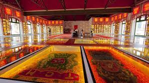

Recife Antigo
Paço do Frevo:
Descrição: O Paço do Frevo é um espaço cultural dedicado a preservar e promover a cultura do frevo, uma manifestação artística e cultural típica de Pernambuco, especialmente associada ao Carnaval. O edifício é moderno e colorido, representando a alegria e a vivacidade do frevo. Além de exposições sobre a história do frevo, o Paço do Frevo oferece apresentações ao vivo, oficinas e eventos que celebram essa expressão cultural única.

Praça do Arsenal:
Descrição: A Praça do Arsenal é um espaço público no Recife Antigo que oferece uma atmosfera agradável e relaxante. Rodeada por edifícios históricos, incluindo o antigo Arsenal de Marinha, a praça é frequentemente utilizada para eventos culturais, feiras de artesanato e apresentações ao ar livre. Ao redor da praça, você encontrará cafés, bares e restaurantes, proporcionando uma ótima experiência para apreciar a paisagem e a arquitetura local.

Home